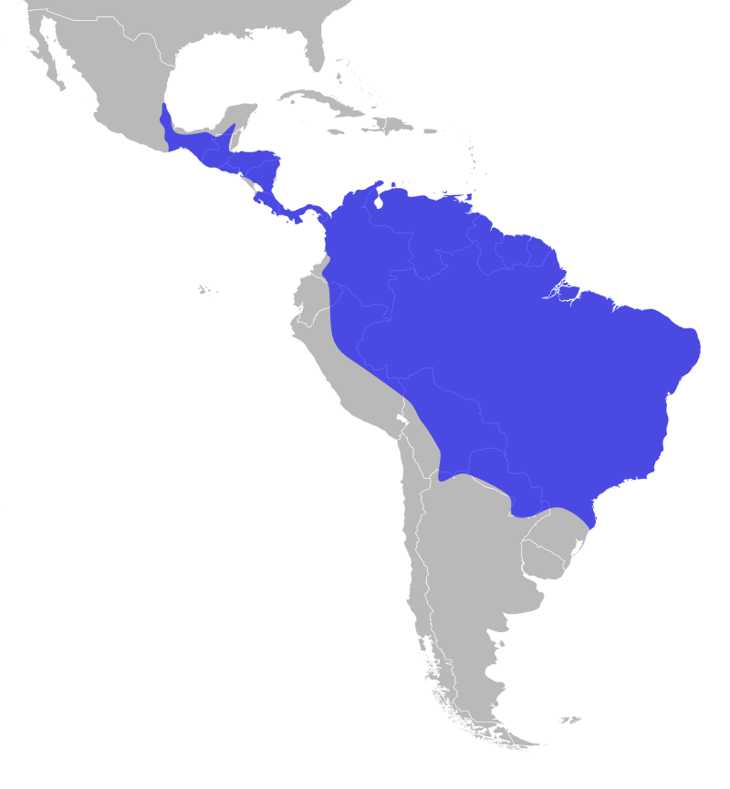

Aguila Árpia
Hábitat y Distribución
El Águila Arpía habita principalmente en bosques tropicales húmedos y densos, donde puede volar a través del dosel con agilidad sorprendente. En Colombia, su presencia se ha registrado en regiones selváticas del Chocó, la Amazonía y algunas áreas del Caribe como la Sierra Nevada de Santa Marta y la Serranía del Perijá. Sin embargo, su distribución está cada vez más fragmentada debido a la deforestación. Es una especie que requiere vastas extensiones de bosque bien conservado para sobrevivir.
Alimentación y Comportamiento
El Águila Arpía es una de las rapaces más poderosas del mundo. Se alimenta principalmente de mamíferos arborícolas como monos aulladores, monos capuchinos y perezosos, además de aves grandes como guacamayas. Es solitaria y muy territorial; las parejas pueden criar solo un polluelo cada 2 a 3 años, lo cual hace que su reproducción sea lenta. Su gran fuerza y técnica de caza la convierten en una superdepredadora del dosel.
Conservación y Amenazas
El Águila Arpía se encuentra en estado Vulnerable a nivel mundial, pero en Colombia podría estar localmente en peligro, especialmente en la región Caribe. Las principales amenazas son la deforestación acelerada, expansión agrícola, cacería directa, y la pérdida de presas naturales. En Bolívar, aunque hay registros antiguos, su presencia actual es incierta debido a la pérdida masiva de cobertura forestal. Organizaciones como Fundación ProAves y WCS Colombia han liderado esfuerzos de monitoreo y educación ambiental para su conservación.